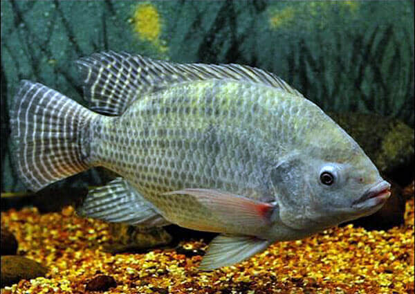

My precious
Jan 31, 2019
Peeling the Otolith of Fish: Optimal
Parameterization for Micro-CT Scanning
In this paper, we aim to provide optimal parameters for micro-computed tomography scans of fish otoliths. We tested fifteen different combinations of sagittae. The images were scaled to Hounsfield units, and segmented into two distinct volumes of interest (external and internal). The strategy we applied, for identifying optimum scan settings for otoliths, including analyses of the sinogram, the distribution of the Hounsfield units, and the signal-to-noise ratio. Based on these tests, the optimum sets of parameters for the acquisition of tomographic images of sagittal otoliths were 80 kV, 220 µA, and 0.5 mm aluminum filter. The method allowed 3D shape analysis, internal and external density distribution, layer-by-layer density segmentation, and a potential objective method to count growth rings in otoliths. It was possible to compare mean densities between species, and we observed a significant difference among them. In addition, there are ontogenic changes, which could be increasing or decreasing the density. In this study, we applied tomography for several otolith analysis, which could be of great interest for future studies in diverse areas that use otoliths as the basic structure of analysis, or represents a new research line called eco-densitometry of otoliths, where tomography could be applied to explore the density within an ecological perspective.
Keywords: Eco-densitometry; Fishery biology, Hounsfield units; Meshlab; Radiodensity; 3D otoliths
VASCONCELOS-FILHO JE, THOMSEN FSL, STOSIC B, ANTONINO ACD, DUARTE DA, HECK RJ, LESSA RPT, SANTANA FM, FERREIRA BP and DUARTE-NETO PJ (2019) Peeling the Otolith of Fish: Optimal Parameterization for Micro-CT Scanning. Front. Mar. Sci. 6:728. DOI: 10.3389/fmars.2019.00728
Longnose stingraaaay!
Jan 31, 2019

Age structure and multi-model growth estimation of longnose stingray Hypanus guttatus (Dasyatidae: Myliobatoidei) from north-east Brazil
We collected 729 Hypanus guttatus from the northern coast of the state of Rio Grande do Norte (RN), of which 196 were used to estimate age and growth. Ninety-five were male (12.7 to 57.0 cm disc width; WD ) and 101 were female (13.0 to 88.5 cm WD ); females were significantly larger than males. Cross-sections of vertebrae showed band-pairs ranging from 0 to > 14 in females and from 0 to 9 in males. Newborns presented an opaque edge at birth in vertebrae without a birthmark. The average percentage of error (APE; %E) for the entire sample provided evidence that ages were repeatable. The mean monthly marginal increment (IM) indicates annual band-pair formation from August to November. The annual cycle model for one band-pair deposition provided the best fit to data based on the AIC, with peaks between August and October, similar to that found in the I M analysis, suggesting an annual formation pattern. A multi-model approach that included four models based on the observed mean WD at the age indicated a modified von Bertalanffy growth model as the best for describing the species growth: W 0 (WD at birth) = 14.6 cm for both sexes; females W ∞ = 98.61 cm (95% CI = 87.34–114.61 cm); k = 0.112 year −1 (CI = 0.086–0.148 year −1 ); males W ∞ = 60.22 cm (CI = 55.66–65.35 cm); k = 0.219 year −1 (CI = 0.185–0.276 year −1 ). The age-at-maturity in males and females is 5 years and 7 years, respectively. The age composition shows that most (84%) specimens were aged 0 to 2 years. The information provided here is essential for analytical assessments of H. guttatus, which is subject to significant fishing pressure mainly on newborns and juveniles.
Keywords: Age and growth; Age structure, Dasyatis guttata; Longnose stingray; North-east Brazil
GIANETI MD, SANTANA FM, YOKOTA L, VASCONCELOS-FILHO JE, DIAS JF, LESSA RP. Age structure and multi-model growth estimation of longnose stingray Hypanus guttatus (Dasyatidae: Myliobatoidei) from north-east Brazil. J Fish
Biol. 2019;94:481–488. DOI: 10.1111/jfb.13918
How good your culture system is?
Dec 16, 2018

A comparative study on Nile tilapia under different culture systems: Effect on the growth parameters and proposition of new growth models
Tilapia culture presents a high potential for income generation and hunger alleviation in developing countries. Suitable culture planning can help achieve such goals sustainably. This work aimed to comparatively evaluate the influence of semi-intensive and intensive cultivation systems of O. niloticus on condition factor, its derivatives, and established growth models (Von Bertalanffy - VBGF, sigmoid Logistic - SLogistic, Brody, and Gompertz) as well as on two proposed models (Michaelis-Menten hyperbolic growth – MMHG and hyperbolic Logistic - HLogistic). Linear estimation of VBGF parameters was also proposed. Weight-length relationships of tilapia were not significantly altered by the systems. Relative weights from the present study were higher in 9 out of 14 comparisons with tilapia from other natural environments and cultivations. Condition factor (K), K mean, K rel, and relative weight (W rm ) proved to be useful tools when assessing growth. In size-at-age analyzes (total length), VBGF and MMHG were the best models for intensive systems whereas Gompertz and VBGF were selected for semi-intensive. Although length-at-age analyzes did not show significant differences between the systems and the growth indexes (ø and P) were slightly higher in cages than in ponds, the comparison between VBGF and Gompertz (best models for weight datasets) - connected to the condition factor investigation and to the importance of natural food - suggested that semi-intensive system specimens would reach commercial size earlier based on the weight in the present conditions. The adoption of the MMHG model when indicated suggests a wide field of research that could allow making inferences expanding the amplitude of growth studies.
Keywords: Aquaculture; Condition factor; Fish growth, Intensive system; Semi-intensive system; Mathematical modeling
SANTOS JF, ASSIS CRD, SOARES KLS, QUEIROZ RE, OLIVEIRA VM, VASCONCELOS-FILHO JE, FRANÇA RCP, LEMOS D, BEZERRA RS.A comparative study on Nile tilapia under different culture systems: Effect on the growth parameters and proposition of new growth models. Aquaculture, Volume 503, 2019, Pages 128-138, ISSN 0044-8486. DOI: 10.1016/j.aquaculture.2018.12.044.
The first time we never forget!
Jun 23, 2018

AGE, GROWTH AND MORTALITY OF WHITE GRUNT CAUGHT IN PERNAMBUCO STATE, BRAZIL
The aim of the present study was to measure the primary growth parameters and to estimate the mortality of the white grunt Haemulon plumierii in the state of Pernambuco, Brazil. Sagittal otoliths were collected monthly from May 2013 to April 2014 from three different commercial fishing landings along the coast of Pernambuco. A total of 333 individuals measuring 10.5 to 32.2 cm in total length were caught. The total length distributions were different between locations. The weight-length relationships and the von Bertalanffy equations were statistically different between the three fishing sites. The weight-length relationship indicated negative allometric growth, therefore the von Bertalanffy equation for pooled sexes was TL t = 31.1[1-e -0.1 (t +4.57) ]. The maximum observed age was 21 years and the mortality rate was 0.21 years -1. The conducted analysis indicates a species with a long life cycle and slow growth. Small reef fish with slow movements, such as the white grunt, are susceptible to fishing efforts, environmental factors, and degradation, which affect growth and mortality. Therefore, we suggest an assessment of the status of the stock.
Keywords: Otolith; von Bertalanffy equation; Artisanal fishery; Trap fishery
VASCONCELOS-FILHO JE, LESSA RPT, SANTANA FM. Bol. Inst. Pesca 2018, 44(4): e406. DOI: 10.20950/1678-2305.2018.44.4.406